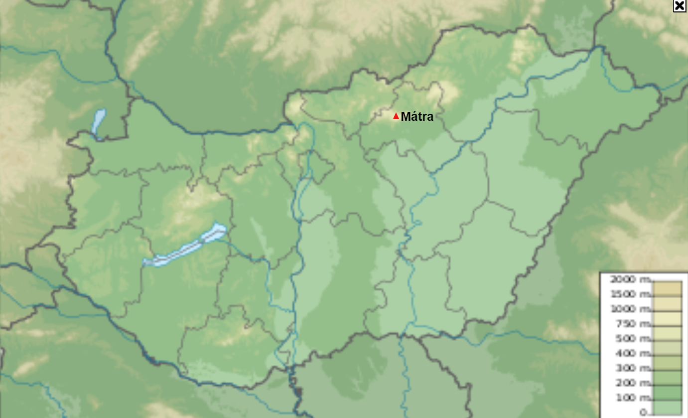
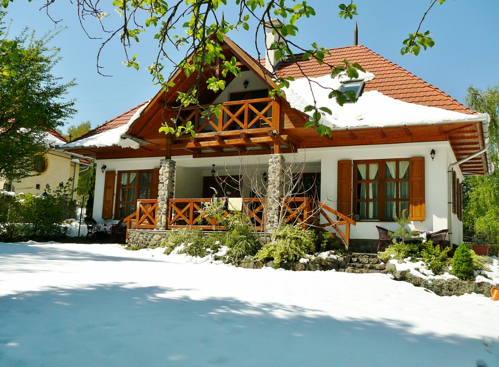

A Mátra az Északi-középhegység egyik, vulkanikus eredetű tagja, amely 900 négyzetkilométeren terül el a Cserhát és a Bükk-vidék között. Itt található a mai Magyarország két legmagasabb hegycsúcsa, a Kékes (1014 m) és a Galya-tető (965 m). A 100 legmagasabb magyar hegycsúcs között 26 mátrai található, ezzel a 2. helyezett átlagmagasságban a Bükk-vidék után. Kiterjedése kelet-nyugati irányban 40–50 km, észak-déli irányban 15–22 km. A Kárpátok belső vulkáni övezetéhez tartozik, de formáit a miocén vulkánosság óta már jelentősen átalakították az utólagos szerkezeti mozgások és az erózió. Jelentős érckészlete miatt sokan kutatták kialakulását és vulkanizmusának történetét, de a geológusok között még a közelmúltban is viták zajlottak az egykori kitörési központok hollétéről.
A Hegy
Elhelyezkedése
Pontos helyzete: é. sz. 47° 52′ 21″, k. h. 20° 00′ 29″
A Mátra 10 Legmagasabb Csúcsa
| Csúcs Neve | Magassága |
|---|---|
| Kékes | 1014 m |
| Hidas-bérc | 973 m |
| Galya-tető | 965 m |
| Piszkés-tető | 945 m |
| Lengyendi-galya | 936 m |
| Sas-kő | 898 m |
| Kút-hegy (Narád) | 880 m |
| Darázs-hegy | 846 m |
| Mogyorós-orom | 842 m |
| Galyavár | 837 m |
A Hely
A Tímár Vendégház nevezetű szállás egy jó hely minden megpihenni vágyó utazó számára a téli időkben is. A vendégházban 3 apartman került kialakításra. Az önálló vendégház földszintjének nyugati felében, egy amerikai konyhás mini lakrész (20 m2 + 3 m2 fürdőszoba), az egyszobás apartman (franciaágyas, nem pótágyazható) került kialakításra.
Elhelyezkedése
A vendégház Parádsasvár délnyugati részén, a település szinte a legmagasabb pontján, 780 m2-nyi telken, önálló házként épült. Könnyen és biztonságosan megközelíthető mindenki számára az év minden szakaszában.

Fontosabb Tudnivalók
- A vendéglátók nem laknak a vendégházban.
- A vendégház étkezést nem biztosít.
- A vendégház és környezete nemdohányzó.
- Házikedvenceket (kutya, macska, stb.) nem lehet behozni.
Elengedhetetlen Dolgok
A Mátra télen hideg, veszélyes és meredek hely. Itt van néhány dolog, amit biztos magaddal szeretnél vinni a kirándulásra. Plusz ott vannak a síeléshez szükséges eszközök is, azokat sem kéne otthon hagyni.
- Kabát
- Sapka
- Kesztyű
- Hátizsák
- Élelem
- Termosztát (meleg innivalóval)
- Síléc
- Síbot
- Pénz (minden drága)